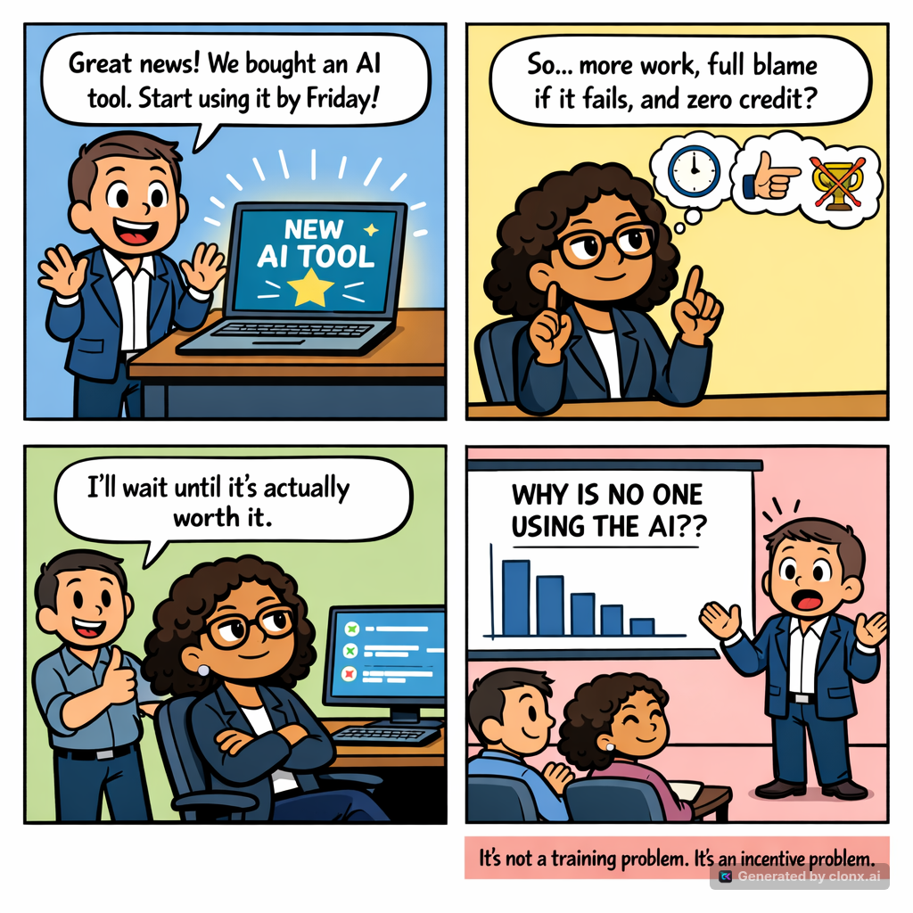

AI Adoption Is a Coordination Problem, Not a Training Problem¶
How game theory can help companies turn isolated AI experiments into better ways of working.
My argument: People often delay or resist AI for good reasons. If companies want wider use, they need to make AI worth trying, reward good work, respect existing expertise, and make the safe option easier than the shortcut.
A company buys an AI platform, announces a big change, schedules training, and waits for everyone to start using it.
A few enthusiasts move quickly. Most people watch. Some attend every demonstration but change nothing in their daily work. Others use public AI tools quietly because the approved system is slower. Leaders conclude that employees fear change.
That conclusion is often too simple.
People do not decide whether to use AI on their own. They watch what colleagues do, what managers reward, who gets blamed when something fails, and whether the tool saves time in real work. They compare the effort of learning it now with a benefit that may or may not arrive later. They also wonder what AI says about the skills they spent years building.
These choices depend on what other people do. That is exactly what game theory studies.
No one needs equations to use the idea. The point is simple: people respond to the rules around them. If a company rewards the old way of working, makes approved AI tools hard to use, and treats questions as resistance, another training session will not help. Change those conditions and trying AI starts to make sense.
By Rodrigo A. Diaz Leven — LinkedIn · GitHub · Resume

Table of contents¶
- The technology is only part of the change
- Why waiting can be rational
- The shared-benefit problem
- When speed creates costs for everyone else
- AI adoption can threaten professional identity
- Visible enthusiasm is not the same as changed behavior
- Change the setup, not just the training
- 1. Make progress visible without turning it into surveillance
- 2. Reward useful behavior rather than AI activity
- 3. Lower the cost of the first useful experience
- 4. Give existing expertise a stronger role
- 5. Make the safe path the easiest path
- A step-by-step adoption plan
- Measure whether work changed, not whether people clicked
- How an adoption plan can go wrong
- What leaders should do differently
- Adoption follows the game people are actually playing
The technology is only part of the change¶
Companies often treat AI adoption like any other software rollout. They choose a tool, give people access, publish a policy, and teach a few prompting tips. Those steps matter, but they do not mean that daily work will change.
Using AI often means changing routines that already work. It can affect how people research, write, design, review, decide, and communicate. It can also change which skills receive praise and which work gets noticed.
This creates several questions for each person:
- Will the tool improve my work enough to justify the learning cost?
- Will I be blamed if it makes a mistake?
- Will I receive credit for using it well, or only pressure to produce more?
- Are my colleagues changing too, or will I do the extra work alone?
- Does management truly value the new behavior?
- Will this make my expertise more valuable or less valuable?
A training session can explain a feature. It cannot answer these questions by itself.
Leaders often assume that people resist because they lack skill or have the wrong attitude. Sometimes that is true. But waiting may also be the safer choice. An employee who gets no credit for careful AI use but may be blamed for an AI mistake has a reason to wait. A manager judged only on this quarter's output has a reason to push for speed instead of learning. A busy team has a reason to return to familiar methods after the workshop.
So there are two jobs: provide a useful tool and make it sensible for people to use it well.
In short: AI changes work, rewards, risk, and professional identity. A tool and a training session cover only part of the job.
Why waiting can be rational¶
One of the simplest ideas in game theory is the coordination game. People do better when they make matching choices, but they hesitate because they do not know what everyone else will do.
Imagine two departments considering the same AI-assisted workflow. It becomes more useful when both take part. They can share instructions, reuse what works, and follow the same process. If only one department changes, it does most of the learning while the other carries on as before.
| Department B adopts | Department B waits | |
|---|---|---|
| Department A adopts | Both gain from shared practices and reusable knowledge | A pays most of the transition cost alone |
| Department A waits | B pays most of the transition cost alone | Neither gains, but neither accepts immediate disruption |
Both departments may want the better result. Still, waiting feels safer when neither trusts the other to follow through.
The classic version of this problem is called the Stag Hunt. Two hunters can cooperate to catch a stag, which gives both a large reward, or each can hunt a hare alone for a smaller but safer reward. Hunting the stag is better if both cooperate. Hunting the hare is safer if cooperation is uncertain.
At work, the “hare” is the current process. It may be slower, but people know how it works. The “stag” is the new process. It pays off when enough people use compatible tools, share what they learn, and build on each other's work.
A public announcement is not enough. People look for signs that the company means what it says:
- Are managers using the new process in planning and review?
- Are teams given time to learn?
- Are successful practices shared and maintained?
- Do promotion and recognition reflect the new expectations?
- Does the approved tool work well enough for daily use?
When those signs are missing, “wait and see” is not stubbornness. It is a reasonable way to avoid risk.
In short: People are more willing to change when they can see colleagues and leaders changing too. Show that the company will follow through.
The shared-benefit problem¶
Some of the best results of AI adoption are things everyone can use: examples, templates, instructions, tested workflows, reusable prompts, checks, and lessons from failed attempts.
Economists call this kind of thing a public good. One person does most of the work, but many people benefit.
Suppose someone spends several hours turning a useful AI workflow into a guide for the whole team. They get some value from it, but most of the benefit goes to other people. If the company rewards only immediate personal output, keeping a rough private version may be the smarter career move.
This creates the free-rider problem. Everyone wants useful shared resources. Each person would prefer that someone else spend the time to create and maintain them.
The problem appears in many forms:
| Shared contribution | Personal cost | Shared benefit |
|---|---|---|
| Documenting a reliable workflow | Time away from immediate delivery | Others avoid repeated discovery work |
| Reviewing an AI-generated template | Careful testing and correction | Many users receive a safer starting point |
| Reporting a failed experiment | Possible embarrassment | Others avoid repeating the mistake |
| Building a set of test cases | Upfront research and maintenance | The company can compare tools and changes |
| Coaching colleagues | Time and attention | More people become capable and independent |
Telling people to “collaborate more” does not fix this. The company has to value work that helps other people do their jobs.
This does not need a points system. Credit can show up in planning, performance reviews, staffing decisions, and public thanks. The important part is to treat team improvements as real work, not a favor done after the real work is finished.
Reuse matters too. Using a tested resource can be better than making another one. If a company rewards creation but ignores reuse and maintenance, it may end up with a large catalog that nobody trusts.
In short: Shared AI resources will stay rare if one person does the work while everyone else gets the benefit. Give credit for creating, reusing, maintaining, and teaching.
When speed creates costs for everyone else¶
AI can reduce the time needed to produce text, analysis, software, designs, presentations, and decisions. That speed creates value when the result is useful and dependable. It creates risk when one person receives the benefit of speed while other people absorb the cost of errors.
This looks like the Prisoner's Dilemma, another game-theory model. Each person can work carefully or take a shortcut. The shortcut saves time now. If everyone takes it, the whole company pays later.
Consider a team using AI to prepare customer communications. One employee reviews sources, checks claims, and considers privacy. Another generates the message quickly and sends it after a brief scan. The second employee finishes first. If the message contains an error, however, customer support, legal staff, managers, and colleagues may carry the cost.
The same thing can happen in hiring, finance, software, operations, research, and policy work. The person who skips the checks saves time. The company carries the risk.
| Individual choice | Immediate personal effect | Possible shared effect |
|---|---|---|
| Verify claims and sensitive data | More time before delivery | Fewer errors and safer reuse |
| Accept plausible output quickly | Faster visible completion | Hidden mistakes, rework, or loss of trust |
| Record limits and uncertainty | Less impressive presentation | Better decisions and clearer accountability |
| Present AI output as settled fact | Stronger short-term appearance | Poor decisions based on false confidence |
If leaders reward only volume and speed, they make shortcuts rational. A policy that says “use AI responsibly” cannot compete with a performance system that rewards the first answer and ignores later cleanup.
The answer is not to bury every task in approvals. The checks should match the risk. A draft for an internal meeting needs less review than a credit decision, a legal notice, or a change to a live system.
Speed should come with ownership. People remain responsible for the claims and decisions they accept, whether a person or a machine wrote the first draft.
In short: AI becomes risky when one person gets the speed and everyone else gets the mistakes. Reward checked results and good judgment, not output alone.
AI adoption can threaten professional identity¶
A new tool is never just a tool. People also wonder what it says about their value.
A copywriter may hear that writing no longer matters. An analyst may hear that careful research has become a button. A senior engineer may hear that years of technical skill have lost their worth. A customer-service specialist may hear that experience and judgment are merely data to be automated.
Leaders may not mean to send these messages. People can still hear them, especially when every announcement talks about replacing work, cutting staff, or doing more with fewer people.
That fear changes the decision. Someone may see that AI helps with certain tasks and still avoid it because using it seems to lower their status. If a company praises AI mainly for replacing expert work, experts have a reason to defend the old process.
A more honest message starts with the tool's limits. AI can suggest options, summarize material, find patterns, and write drafts. It still needs people to define the problem, judge the evidence, understand the context, spot harm, weigh trade-offs, and take responsibility.
Existing expertise often becomes more important when output becomes cheap. A skilled professional can identify where a confident answer is wrong, which exception matters, and what the tool was never told. A novice may receive the same output without knowing where to question it.
Companies should make this role clear. Experienced employees can set standards, create examples, test outputs, teach context, and decide where automation does not belong. This should be real work with real authority, not an honorary title.
The message also has to match real decisions. People will not believe that judgment matters if promotions, staffing, and praise still focus only on quantity and speed. They will believe what leaders reward when a real trade-off appears.
In short: AI can feel like a threat to status, not just a new tool. Give experienced people real authority to guide, test, and improve how it is used.
Visible enthusiasm is not the same as changed behavior¶
A company can look busy with AI without changing how work gets done.
People attend demos, join pilot groups, mention AI in plans, and repeat the latest company language. Usage numbers rise because employees open the tool. Yet important work continues as before, or people use AI only for small tasks that do not matter much.
This is sometimes called adoption theater. It does not always mean that people are pretending. They may support the idea but lack time, confidence, access, or a clear use for it. They may also learn that showing enthusiasm is safer than changing how they work.
Managers see participation but cannot tell whether work changed. Employees see announcements but cannot tell whether the company will keep supporting the effort.
Tool usage alone cannot resolve the uncertainty. A login does not prove value. A high prompt count may show confusion rather than progress. A polished AI-generated document may hide weak understanding.
Better evidence comes from normal work:
- Did a task become faster without increasing correction work?
- Did the quality of a decision improve?
- Did a reusable practice help another team?
- Did an employee identify a risk before it became a problem?
- Did the process reduce repeated work?
- Did people stop using the tool where it performed poorly?
The last question matters. Good AI use includes knowing when not to use it. If people learn that a tool is unreliable for a task and choose another method, that shows judgment, not resistance.
In short: Attendance, logins, and prompt counts do not prove much. Look for better work and sound decisions about when AI helps and when it does not.
Change the setup, not just the training¶
Game theory also asks a practical question: how can we change the rules so that sensible personal choices lead to a good result for everyone?
For AI adoption, that means changing the setup around the choice. Five changes matter most.
1. Make progress visible without turning it into surveillance¶
People need proof that others are learning and that the company is serious. Share team examples, lessons, reused work, and measured improvements. Show how people use AI in real work, including where it failed.
The point is to help people see what is happening, not to rank them. Individual leaderboards can reward shallow activity, punish people whose jobs offer fewer uses for AI, and encourage activity that looks good on a dashboard but helps no one.
Useful examples include:
- Short demonstrations based on completed work.
- Case studies that include effort, limits, and corrections.
- A shared record of tested practices and known failure modes.
- Team-level progress against agreed outcomes.
- Open discussion of where the tool should not be used.
In short: Show useful examples and team learning. Do not turn adoption into an individual ranking system.
2. Reward useful behavior rather than AI activity¶
People learn a company's real rules from praise, promotions, staffing, and workload.
If leaders say that careful AI use matters but still reward only volume, employees will optimize for volume. If mentoring and shared resources receive no credit, people will treat them as extra work. If an honest account of a failed experiment harms a career, future failures will become less visible.
Work worth recognizing includes:
- Improving a result with appropriate AI assistance.
- Finding that an AI approach is unsafe or ineffective.
- Creating a tested resource that others reuse.
- Helping colleagues learn to do the work themselves.
- Reducing risk or repeated work.
- Explaining the limits of an AI-assisted decision.
Do not make “uses AI” a performance category. Judge the work itself.
In short: People follow the rewards they can see. Reward useful results, learning, good judgment, and help given to the team, not AI use by itself.
3. Lower the cost of the first useful experience¶
Big change programs often ask people to do too much before they see any benefit. A small first step gives them an answer sooner.
A simple path might look like this:
| Stage | Action | Purpose |
|---|---|---|
| Explore | Use AI on a low-risk, familiar task | Learn the basic interaction and limits |
| Compare | Complete a task with and without assistance | See whether the tool actually helps |
| Integrate | Add AI to one repeatable part of a workflow | Move from experiment to practice |
| Share | Record the method, evidence, and limitations | Help others judge whether to reuse it |
| Improve | Maintain or revise the practice after use | Prevent the shared resource from becoming stale |
Pairing can help. A colleague who has already done something similar can answer basic questions and stop a small setup problem from ruining the first attempt.
The first use case should matter enough to demonstrate value but carry limited risk. Asking people to begin with their most sensitive or complex work makes adoption harder than necessary.
In short: Start with a small, useful, low-risk task. Let one good result earn the next step.
4. Give existing expertise a stronger role¶
Experienced employees can help design and look after AI-assisted work. They know the exceptions, history, customer needs, legal limits, and day-to-day realities that a general AI model does not.
Invite them to:
- Define what good output looks like.
- Build and review realistic test cases.
- Identify high-risk uses and forbidden shortcuts.
- Teach the context behind successful practices.
- Review failures and update guidance.
- Decide where human judgment must remain central.
This also makes the tools more useful. AI works better when people close to the job provide the right background, test the results, and set clear limits.
Participation must be real. Asking experts to approve a finished plan after key decisions have already been made does not protect their role or improve the result.
In short: Let the people who know the work shape how AI is used. Their knowledge is part of the solution, not a barrier.
5. Make the safe path the easiest path¶
Employees will avoid an approved system if it is slower, less capable, or harder to access than the alternatives. They may return to old methods or use unapproved tools quietly.
This is not just a policy problem. It means the company has made the wrong option easier.
The approved path should provide:
- Simple access and clear boundaries.
- Tools that fit existing work.
- Approved ways to handle sensitive information.
- Fast feedback when a use case is blocked.
- Reusable examples for common tasks.
- Controls proportional to risk.
- A clear route for reporting errors without punishment.
Put the important rules into the workflow where possible. People should not have to study a long policy every time they do a routine task.
No approved tool will be best at everything. The goal is not to remove every check. It is to remove pointless delays while keeping the checks that matter.
In short: If the unofficial option is much easier, people will use it. Make the approved workflow safe, useful, and quick enough for daily work.
A step-by-step adoption plan¶
Companies often choose between one big launch and a collection of small experiments. A step-by-step plan works better. It lets people learn what works before the company ties adoption to important decisions.
Phase 1: Understand the starting point¶
Begin with work, not tool counts.
- Identify tasks where employees already use AI, including unofficial use.
- Ask where people see value, risk, confusion, and wasted effort.
- Record current time, quality, and rework for a few candidate workflows.
- Identify groups with different needs and levels of confidence.
- Clarify which uses are prohibited or require special review.
An anonymous survey or feedback channel can help. People may not admit unofficial use or career concerns in a public workshop.
Phase 2: Prove value in narrow cases¶
Choose a few low-risk tasks with clear results. Compare AI-assisted work with the current method. Record setup time, corrections, quality, and what employees thought of the process.
Use volunteers, but do not rely only on enthusiasts. A tool that works only for people who enjoy experimenting may not support broad adoption.
Phase 3: Build skills the team can share¶
Turn successful experiments into maintained practices. Train through real examples. Pair people during their first use. Give experts time to review guidance and test cases.
At this stage, the company should remove practices that did not work. A small trusted collection is better than a large pile of untested prompts and templates.
Phase 4: Update management practices¶
Update expectations, review processes, planning, and recognition. Managers need guidance on how to discuss AI-assisted work without rewarding raw usage or punishing honest limits.
This is where leaders prove whether the change is real. If the official expectations change but deadlines, staffing, and performance reviews do not, employees will follow the old rules.
Phase 5: See whether it lasts¶
Reduce special support gradually and observe what happens. Do teams keep using and improving the practices? Do new employees learn them through normal work? Do shared resources stay current? Do people still report failures?
A practice that disappears as soon as the pilot ends was not fully adopted.
In short: First understand the work, then test a few uses, share what works, update management practices, and see whether the change lasts. Do not add serious consequences before the company has tested its own plan.
Measure whether work changed, not whether people clicked¶
Companies need to know whether AI is helping. Trouble starts when an easy-to-count number becomes the goal.
Use several kinds of evidence instead of relying on one number.
| Question | Possible evidence |
|---|---|
| Did the work improve? | Time to complete, error rate, customer outcome, decision quality, or reduced rework |
| Did people adopt the workflow? | Use within relevant tasks, not logins or total prompts |
| Is the result dependable? | Verification results, corrections, incidents, and review findings |
| Are people sharing what works? | Reuse of tested practices, successful onboarding, and less repeated research |
| Do employees trust the process? | Surveys, interviews, reporting rates, and willingness to discuss failure |
| Does the practice last? | Continued use after special support ends and evidence that resources stay current |
No single measure answers all these questions.
Prompt counts and active-user rates can help operate a service. They can reveal whether access works or whether usage suddenly drops. They should not become direct measures of employee contribution.
Likewise, time saved should include correction and maintenance. A draft produced in five minutes but corrected for two hours did not save two hours simply because the first version appeared quickly.
Stories matter too. A short account of how a team avoided a bad decision may tell you more than a dashboard. But one good story is not enough. Use stories and broader evidence together.
In short: Measure better results, quality, reuse, trust, and whether the change lasts. Use login and prompt counts to run the service, not to judge people.
How an adoption plan can go wrong¶
A well-meant adoption program can create harmful behavior if it rewards the wrong signals.
Do not create AI quotas¶
Targets for prompts, automations, or AI-assisted tasks push people to use AI where it adds no value. Choosing not to use it must remain acceptable.
Do not turn transparency into surveillance¶
People need to see what is working, but individual monitoring can damage trust and push AI use underground. Focus on team learning and results. Collect only data that has a clear purpose.
Do not reward quantity of shared assets¶
A hundred untested templates are not more valuable than five reliable ones. Measure use, maintenance, and results rather than catalog size alone.
Do not confuse confidence with competence¶
AI can produce polished language that makes weak reasoning look complete. Review evidence, assumptions, and consequences rather than presentation quality.
Do not penalize honest failure¶
If every failed experiment hurts the person who reports it, the company will stop hearing bad news. Separate careful testing from careless work.
Do not ignore unequal opportunity¶
Some roles offer many safe uses for AI. Others involve sensitive work, physical processes, or tasks where current tools add little value. Compare people within their context.
Do not give experts extra duties without giving them time¶
Reviewing test cases, maintaining guidance, and coaching colleagues are real work. If companies add these duties without reducing other work, quality will drop.
Do not use adoption as a substitute for strategy¶
AI cannot repair an unclear product, a broken process, poor data, or conflicting goals. Automating confusion can make it travel faster.
In short: Watch for quotas, surveillance, piles of low-quality templates, hidden failures, and unfair comparisons. Usage can go up while the company gets worse at the work.
What leaders should do differently¶
Leaders do not need to become game theorists. They do need to ask better questions.
Instead of asking, “Why are people resisting?” ask:
- What does adoption cost them now?
- Which benefits remain uncertain?
- What risks do they carry personally?
- What do they observe managers rewarding?
- Which parts of their professional identity appear threatened?
- Is the approved path easier than the alternatives?
- Can they see convincing examples from peers?
Instead of announcing that AI use is mandatory, define where it is useful, where it is optional, and where it is unsafe. Give teams room to test those boundaries and revise them as evidence changes.
Do not assume early adopters represent everyone. Find out why they succeed. They may have more confidence, more suitable work, better access, or more patience for failed experiments. Wider use needs a setup that also works for people who do not enjoy testing new tools.
Do not measure enthusiasm. Check whether work improved. Ask what became faster, safer, clearer, or more reliable. Ask what new risks appeared. Ask who learned useful skills and who was left behind.
Most of all, back up promises with decisions. If leaders say careful judgment matters, reward it even when it slows delivery for a good reason. If they say failure is part of learning, protect people who report a well-run failed experiment. If they say expertise matters, give experts a real say in the new workflow.
In short: Hesitation tells leaders something about cost, risk, rewards, or trust. Fix those problems before demanding a different choice.
Adoption follows the game people are actually playing¶
AI adoption is often presented as a contest between people who embrace the future and people who resist it. That story is attractive because it is simple. It is also a poor guide for action.
People respond to the rules around them. They wait when leaders may change direction again. They do less shared work when only personal output gets credit. They take shortcuts when speed gets rewarded and other people carry the risk. They defend old methods when AI seems to lower their status. They perform enthusiasm when leaders count attendance instead of better work.
None of this means that every objection is correct or that change should stop until everyone feels comfortable. It means that leaders should distinguish a difficult transition from a badly designed one.
A better plan does five things:
- It shows people that the change is real and useful.
- It makes the first useful step cheap and low-risk.
- It rewards results, learning, shared work, and good judgment.
- It gives existing expertise an active role in shaping the new work.
- It makes the approved workflow practical enough to use every day.
When these conditions improve, leaders do not need to keep selling the idea. People can see how the new way helps their work, their colleagues, and their careers.
The main question is not, “How do we make people use AI?”
It is, “What game have we created around its use, and which choices does that game make rational?”
In short: AI use lasts when the sensible choice for each person is also good for the company. Change the game and people can make a different choice.
About the author¶
Rodrigo A. Diaz Leven is a platform engineering lead who works on AI-assisted engineering, evaluation, developer tools, and practical ways to introduce AI at work.
If this essay raised a question, disagreement, or example from your own company, he would like to hear it:
- LinkedIn: https://www.linkedin.com/in/rodrigoleven/
- GitHub: https://github.com/bruj0
- Resume: https://resume.bruj0.net/bruj0/rodrigo-leven